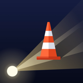

Road Radar
Phuket road events from riders
Support
Questions, bugs or a wrong event on the map? Write to help.nikapps@gmail.com. We usually reply within two days.
Common questions
Why does the app need my location? To show events ahead of you and to place your report. Only while the app is open.
How do I delete my account? Account → Delete account.
An event is wrong or gone. When you pass it, answer “Still there?” with No. Events also expire on their own.